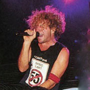

Drag the correct vocalist to his correct place on the timeline.
1976-1985
1985-1996
1996
1996-1999
2003-2005
2007-2017
A very young David Lee RothA slightly older David Lee RothA much older David Lee Roth

A young Sammy Hagar, AKA The Red RockerAn older Sammy Hagar (still The Red Rocker)Gary Cherone. You know. From Extreme.
Now drag the singers in order from best frontman to least best frontman.